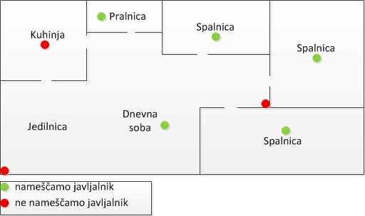

PREVENTIVNI UKREPI
POMEMBEN GRADBENI UKREP V DOMAČEM OKOLJU JE LOČITEV V POŽARE SEKTORJE. OBIČAJNA ZAHTEVA JE LOČITEV KURILNICE V POŽARNI SEKTOR. ZAHTEVA JE SMISELNA TUDI V PRIMERU OBSTOJEČIH OBJEKTOV. PRAV KURILNICE S PEČMI NA TRDA IN TEKOČA GORIVA (TUDI PLINASTA GORIVA) SO MESTA, KJER V OBJEKTU LAHKO NASTANE POŽAR.
POMEMBEN TEHNIČNI ALI UKREP AKTIVNE POŽARNE ZAŠČITE V DOMAČEM OKOLJU JE T.I. POŽARNI ALARM. GRE ZA VRSTO POŽARNEGA JAVLJALNIKA – NAPRAVE KI ODKRIVA PRODUKTE, KI NASTAJAJO MED GORENJEM, KI IMA V TELESU NAPRAVE VGRAJENO STUDI SIRENO ZA OBVEŠČANJE. NAPRAVO OBIČAJNO NAPAJA 9V BATERIJA.
SLIKA 1: DIMNI JAVLJALNIK POŽARA
POŽARNI ALARM SLUŽI:
V STANOVANJU NAMEŠČAMO POŽARNE ALARME NA STROP NEKATERIH PROSTOROV, KOT SO SPALNICE, OTROŠKE SOBE IPD.

SLIKA 2: MESTO POSTAVITVE POŽARNIH ALARMOV
POŽARNIH ALARMOV NE NAMEŠČAMO V KOTE PROSTOROV, SAJ DIM KOT NAJKASNEJE DOSEŽE. PRAV TAKO POŽARNIH ALARMOV NE NAMEŠČAMO V BLIŽINO ŠTEDILNIKOV.